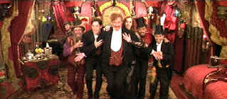

|
Moulin Rouge (SE)/ B, A |
|
Fox/2001/128/ANA 2.35 |
Writer/director Baz Luhrmann approaches
filmmaking with enough passion to fuel several movies. It was evident in the
deliciously pop art Strictly Ballroom. His interpretation of
Shakespeare's Romeo and Juliet was loud, electric, faithful and
irreverent. Luhrmann's passion translates to confidence which translates to
daring which translates to a cinematic style on the edge. It may not always
work, but you must admire the audacious of the work. Which leads me to
address my mixed feelings for Moulin Rouge, admittedly daring, brash,
exciting, stupefying and over the top.
 |
|
Spectacular Spectacular is spectacular. ©Fox |
Moulin Rouge's roots are opera and pop
musical mixed with bad melodrama and surrealism; the classic Hollywood
musical fused with MTV rhythms divided by two. Luhrmann attempts to take a
classic 19th century tale and adapt it to 20th century sensibilities. That
he succeeds and fails in the same breath is not surprising.
The simpering through line smacks of the maudlin opera La
Boheme. A struggling writer falls in love with the queen of Paris's
"depraved" night life , the star of Montmartre's Moulin Rouge, a
singer, dancer and courtesan of the most daring and notorious club in
France. In the meantime, Satine is prize bait in the club's search for fresh
financing. Maybe Luhrmann does treat the bad melodrama with a comic
darkness, but it was not evident to me. Tone swings back and forth like a
trapeze artist.
Ultimately, Moulin Rouge is a musical in which style
dominates story and even overpowers the music. Script is subservient
to visual flourish. Magnificent production designs and costumes are chopped
into a cacophonous puzzle of pieces. Brash rapid cutting results in an
explosion of energy. It's also disconcerting. You are left with the
impression that excessive energy has undermined greatness. There is
greatness in Luhrmann's puzzle. In his zeal to paint movies with unique
vision, Luhrmann's canvas becomes painfully busy.
Satine is a dazzling star of the Moulin Rouge
universe. Nicole Kidman delivers the glitter and ardent sexuality in a daffy
performance laced with camp and dressed with obvious hunger as the down and
dirty diva of the diamond dogs.. Kidman's long limbs and graceful curves fit
perfectly into the tight revealing costumes. Ewan McGregor is writer
Christian swept up in the excitement and vitality of a Paris on the cusp of
an artistic Renaissance. McGregor never seems quite right belting out the
soulful ballads or eagerly searching for camp acting flare. Jim Broadbent is
absolute perfection as entrepreneur extraordinaire Harold Zidler, the
lascivious life force of Moulin Rouge. When Broadbent breaks out into
Voulez Vou Couchet Avec Moi and Spectacular Spectacular, the
screen reverberates with his decadent energy. Too bad the ferocious editing
rends his performance to shreds. Richard Roxsburgh is a wonderful Duke. He
probably is treated to the kindest editing of all. The camera takes enough
time on his rubber face to extract exuberant hilarity.
Moulin Rouge explodes into brilliant DVD color.
Production design dominated by hot reds is perfectly transferred.
Fully saturated colors retain unique space with no hint of bleed. Images are
uniformly sharp showing off the marvelous production detail. Fabrics realize
a tactile sense. Costume details display every ornament. No visual artifacts
upset the grand design. High key bright theatrical presentation is rendered
to the highest standard. Shadow detail is in perfect balance and blacks are
lusciously deep. Both Dolby Digital and DTS mixes are available. The DTS is
one of the best in recent memory. Levels are consistent with the Dolby. Bass
range is filled with huge long bursts of air.
Two excellent commentaries from Luhrmann, production designer
Catherine Martin (Mrs. Luhrmann), director of photography Don McAlpine on
one and writer Craig Pearce and Luhrmann on the second. The second disc in
the special edition package includes deleted scenes, five featurettes, a
making of HBO special, music videos and multi-angle sequences. There's more
than enough detail to thoroughly immerse yourself in the world of Moulin
Rouge. |
|
|
|

Selections from the
Feature Archive include articles on Akira Kurosawa,
Frank Darabont,
Blonde Bimbos,
Hollywood Street Gangs, or
Vietnam: The Hollywood Pariah, and many
more....
Puttin on the Ritz

Fred Astaire and Cyd Charisse bring Silk Stockings to life, a remake of
Ninotchka, one of many films successfully turned into musicals by the
Hollywood dream factory. Read all about remakes into musicals by clicking on
the divine dancers.

Take a look at the merry
images of America's gift to the movies:
Hollywood Musical Posters are
featured from The Movie Poster Archive.

A Star is Born/A,B

Judy Garland is brilliant in the great Hollywood tale of one star on the
rise and another sliding into the abyss. James Mason is wonderful alongside
Judy.

 Have you visited Home
Theater Talk lately? One of the friendliest places on the Net for Home
Theater and DVD discussion, you can get help for installation problems or
simply share your opinions with other Vidiots. Have you visited Home
Theater Talk lately? One of the friendliest places on the Net for Home
Theater and DVD discussion, you can get help for installation problems or
simply share your opinions with other Vidiots.

"Products and services perfecting home
theater"
ISF Calibrations in Colorado, 6500K monitor bias lighting.
MRQE
Find reams of movie and DVD
reviews at the Movie Review Query Engine, a index of reviews appearing on
the Internet.

Mystery writer Fred Hunter digs into classic
films on DVD. Check out his insightful reviews at
The Classics on DVD.
 Large variety of movie posters for sale now specializing in Polish and
Japanese paper. Easy interface and a Soho gallery storefront.
Large variety of movie posters for sale now specializing in Polish and
Japanese paper. Easy interface and a Soho gallery storefront.

Great site for DVD
followers. Lots of information, some speculation, opinion, and reviews all
bundled in a sparkling interface.
|